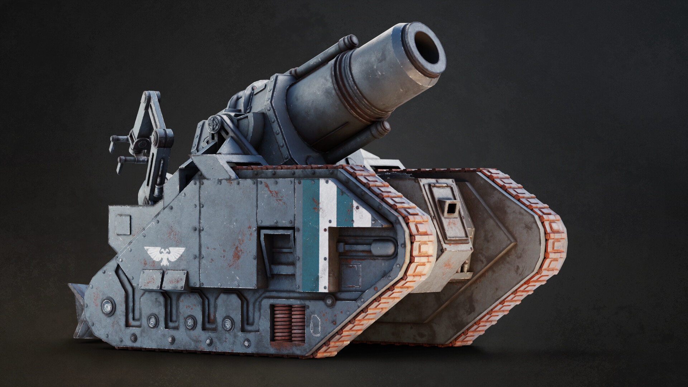
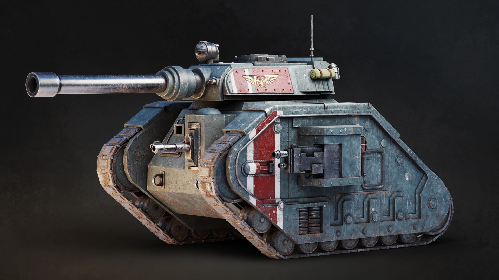

ПРОЕКТ
БОМБАРДА
Арт рендер осадного орудия. Моделинг в Blender,
детализация текстур в Substance Painter.
Данная работа представляет собой детальную 3D-визуализацию тяжелой осадной мортиры типа «Бомбарда», состоящей на вооружении полков Имперской Гвардии. Основной задачей проекта была отработка навыков создания сложных механических форм и работа с PBR-материалами.
Модель выполнена с упором на функциональность: проработаны механизмы отката ствола, гидравлические опоры и система заряжания. Особое внимание уделено микродетализации корпуса — от заклепок до следов эксплуатации в суровых боевых условиях.
ГАЛЕРЕЯ
.jpg)


Весь процесс создания, от блокинга до финального рендера, занял около трех недель. Ключевой особенностью является работа с текстурами в Substance Painter: это позволило добиться уникального эффекта ржавчины, сколов краски и масляных подтеков.
Освещение настроено по трехточечной схеме с использованием HDRI-карты промышленной зоны для создания реалистичных металлических отражений и передачи атмосферы гримдарка.



.jpg)